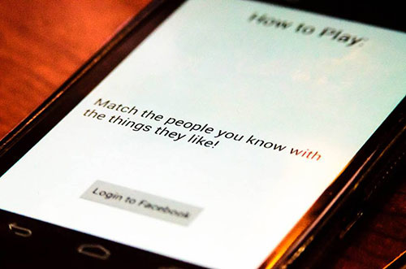

COMPUTER PROTOTYPE

A screenshot from computer prototype of Acememo
3. Usability Testing Procedures
6. Summary of Individual Contributions
User Manual
NOTE: Although a user manual for Acememo most likely won't be necessary for an experienced mobile device user, all the rudimentary actions are explained within this manual for reference. Besides, "how-to instructions" are already embedded within the application.
Installation
1. Download Acememo.apk file
2. Run Acememo.apk file to initiate installation
3. Prompt ask “Complete action using” choose Package installer
4. Start Installation
Running App
1. In main menu, find Acememo
2. Press on Acememo icon
3. Acememo app will start running
Using App
1. If Facebook account exists press “Login to Facebook” else press “Continue without Facebook” to log into app
2. Review “How to play game” in the horizontal scroll view
3. After logged in to Facebook, press “Start Game” to play app
Gameplay
1. Select number of pairs to remember
2. Memorize the pairs (a person and an item they like) as they show up on the screen
3. Press “I am ready” when memorized all pairs of data
4. Drag a person to the item they like
5. Repeat step 4 until every person has been linked to an item
6. Press “I am done” to check if completed level
7. If level complete, press “Move on to next level” or “Review Level”
8. If level is incomplete, press “Restart Game” or “Review Level”
*Note: further instructions available in app
Prototype Development
How has your vision of the project changed from the time of conception?
So far everything that we have wanted to implement in our application has worked as planned; therefore our vision has solely changed based on the feedback we received from our tester last week. After demonstrating our paper prototype we received feedback that we should first of all allow players to play our game even if they do not have a Facebook account. Secondly, we should allow users to complete the level before letting them know that they made a mistake. It was also suggested that we should keep track of the user’s score in each level and present it to them immediate after they complete the level. Lastly, our experimenter made the suggestion that we should allow the users to return and view the mistakes that they made once the level is finished.
Design Decisions
Play without a Facebook account
By adding the option of playing without a Facebook account, in addition to having the “Play with Facebook” option, we are increasing our user base by allowing anyone to play our game. Also, as was explained to us by our tester, it will be harder for a patient to remember something about a randomly generated person from the Facebook graph api that they don’t know as opposed to remembering a characteristic about a family member or friend who they have known for a very long time. For this reason, not only does playing without Facebook increase the user base, but it also increases the difficulty of the game to some extent.
In terms of feasibility, the algorithms for both the with Facebook and without Facebook versions of the game are identical, the only thing that changes are the data sets from which you are pulling the information to memorize. For this reason, it is extremely feasible to provide the option of playing without Facebook.
Allow Level Completion
By allowing a user to complete a level, you are allowing them to rethink their decision and change their mind. This is much better for the usability of the game seeing as it allows the user to connect the people that they think are correct, in order for them to determine the rest of the connections which they might not be too certain about. If they do happen to make a mistake in the first few connections and pick up on their mistake before completing the level, they may move their answers around which proves that their memory is improving and although they might not have remembered the connection right away, they just needed a little bit of time to figure it out correctly. Also, allowing a user to complete a level instead of cutting it off as soon as they make a mistake, makes a user feel much better than telling them they failed and not letting them try to figure out their mistake.
In terms of feasibility, it is very simple to make thing change, seeing as the correct connections must be kept in memory anyways. Whether we check for correctness as the player is playing the level, or we once all the connections have been made, the checking code is still extremely similar; the main difference is basically just the number of checks that are being done at the same time. This change is worth implementing seeing as it will definitely help the user improve and keep their moral high.
Keep Track of User’s Score
This goes hand in hand with the previous design decision, because by letting the player complete the level, there must be some way of notifying them how many answers they got right and how many they misconnected. It is definitely something that will motivate the users to improve themselves for next time, so that they can not only go further in the levels, but also increase their scores even on the levels in which they did poorly.
Feasibility-wise, this design is extremely easy to implement seeing as we will be checking the correctness of each of the connections anyways. We will just have to keep track of how many connections were made correctly, and how many were made incorrectly; this number will then be displayed on the results screen following the level.
Allow Users to View Mistakes
Once again, this decision goes along with the two previous ones; seeing as you are letting the user play until the end of the level and you are providing them with the score that they received on the level, there must be some way for them to check to see the mistakes that they made. Enabling users to view their mistakes will allow them to see exactly which connections were wrong, as well as how far off they were from the correct answer. This could help the user determine why they made the mistake. For example, did they make the mistake because the accidently chose the wrong image when making the connection (ie. one image looked like another), or did they simply do not remember which person belonged with which item.
Out of the four new design decisions, this is definitely the most complicated to implement; however, all the information will already be stored. Before starting the level, the correct connections will be stored in a data structure, and the connections being made by the user during the game will be stored in a separate data structure. So, even though viewing the users results is not something that was already being done, all the information that is needed is stored, and the only thing that needs to be done is analyse it and display it in a format that is easy for the user to comprehend. Although this is not the simplest of tasks, the tester was extremely certain that this would help the user and their therapist with their learning and improvements, therefore we believe that it is a key implementation to have.
Critical Functionality
The functionalities that we believe are critical for this stage of the design are as follows:
- How to Play
o The how to play instructions on the main page will allow the user to figure out how exactly to use our application without us having to tell them anything.
- Facebook Login UI (no background functionality)
o The Facebook UI is more of a formality than a functionality. We want the testers to go through the motions of registering their Facebook account to ensure that it flows well and is intuitive, but for the purpose of this prototype, it is not important that the data comes from Facebook.
- Select Level
o We want the user to be able to play the game from level 1 as if they have never played it before, but we also want to see if it is intuitive enough to change levels but varying the number of pairs.
- Minimum 2 working levels
o Seeing as all the levels are fairly similar, 2 levels will give us a good idea of how the UI flows between the levels. There is no need to overload the tester with several more levels which are similar to the first 2.
- Drag & Drop
o We want to ensure that the drag and drop motion is the best, most intuitive and simplest way to play our game. Ensuring that this functionality is implemented for this prototype is essential.
- Restart Game / Replay Level
o Allows the tester to play around in the application and do what they want rather than follow a linear path through the levels. This will hopefully bring on more feedback about each of the levels, rather than only letting them play each level once.
- View Errors
o This screen does not have to be extremely refined, it just has to be enough to show the testers the mistakes that they made and which are the correct connections. The basic goal here is to test our ideas seeing as we did not get to test this section during the paper prototype testing.
Usability Testing Procedures
Usability Goals to be Tested
1. User interface requires minimal learning
a) Buttons are clear
b) Drag and drop action can be understood
2. User interface interactions take minimal time to complete
3. User feels encouraged by the system to improve her short term memory
4. User can learn from his/her mistakes
Types of Users Required
Ideally, since the game targets users with short term memory problems that may stem from different health conditions, testers should have some sort of short term memory problems. Although some usability goals – i.e. related to the user interface – can be tested with people who do not fit in this description.
Number of Examiners
We need 3 examiners in total:
· One examiner will coordinate the testing session – i.e. briefing, walking through each test, etc.
· One examiner will measure all the quantitative and behavioral data
· One examiner will record the testing session for later reviewing
Testing Equipment
· An Android smartphone (ideally running Android 4.0+) to run the application
- A video camera to record the testing session
· A device with stopwatch ability to measure timing on certain tasks
· Pen/pencil or computer to record observations and results
Handling the Prototype
Although the instructions on “how to play the game” are included within the application, we have included all the steps to install and run the application and play the game in the user manual. If the Android smartphone used for testing comes with the application installed, the user can skip the instructions. Reading the manual is completely optional and is not necessary for a mobile device user as the instructions on how to play the game are already illustrated within the prototype of the game.
Instructions for the Examiner
1. First, introduce the project
2. Let the user know that the session is being recorded and ask them to sign the consent form to have their full consent on using all the data acquired from the testing
3. Go through the briefing session
4. Go through the pre-test questionnaire
5. Conduct the usability evaluation
6. Conduct the heuristic evaluation
7. Go through the debriefing session
8. Conduct the post-test questionnaire
Effects of the Feedback on Design Decisions
The test is designed to improve usability goals, so we take into account all the results in testing of our prototype, and after TA feedback if the improvements are seen as necessary, we go forward with them.
Usability Test
Examiners should not say anything or reveal other information to test subjects other than the stated instructions for each task during this usability test. Examiners should also not show any gestures during the game play.
Here is the evaluation template for each task being conducted during the test:
Optimal Action: For each task, if the user fully completes the optimal action, the task is considered successful. No need to consider revisions in design.
Failing Action: If the user does any one of the failing actions, then the task is considered as failed and design decisions needs to be revised.
Observations to be Recorded: These are the observations to be recorded for each task by one of the evaluators. Whether the task resulted with optimal or failing action should always be recorded.
Task 1: Set up the Game
Instructions: The application is now opened. Please proceed to set up the game, but don’t start playing.
Optimal Action: The user presses on “Connect to Facebook” and allows the application to access her information or presses on “Continue without Facebook” button.
Failing Action: The user doesn’t know where to click on the screen and/or it takes more than 20 seconds for the user to set up
Observations to be Recorded: How many seconds the set up takes
Task 2: Learn how to Play
Instructions: Please take a look at instructions on how to play the game.
Optimal Action: The user swipes on the screen to see the next how to play instructions.
Failing Action: The user does not know how to go through the instructions or does not realize she has to swipe to see the further instructions.
Observations to be Recorded: How many times does the user interact with the screen before she understands the swipe action?
Task 3: Start the Game and Play
Instructions: You can now start playing.
Optimal Action: The user clicks on “Play Game”, then presses on “Start” after choosing number of pairs. Then proceeds to Level 1: Clicks “I’m ready” after seeing the first pair of cards.
Failing Action: The user spends more than 20 seconds trying to interact with pair selection screen, or she does not recognize the “I’m Ready” button.
Observations to be Recorded: Time spent with interacting with the pair selection screen and time spent recognizing “I’m Ready” button
Task 4: Start Playing at Level 1
Instructions: No instructions necessary. Let the user continue from previous task and record observations.
Optimal Action: The user drags and drops the person onto the object they like.
Failing Action: The user spends more than 20 seconds understanding the drag & drop action.
Observations to be Recorded: Time spent to successfully drag and drop the person onto the object they like.
Task 5: Continue to Next Level and Restart Level
Instructions: Please replay this level after completing.
Optimal Action: The user presses “Continue to Next Level”, and successfully matches 2 people with the things they like and presses Replay Level then completes the level again.
Failing Action: The user fails to press Continue to Next Level or Replay Level within 20 seconds.
Observations to be Recorded: Time spent on recognizing “Continue to Next Level” button or “Replay Level” button.
Task 6: Learn From Failure
Instructions: Now, we want you to fail at this level and learn what you did wrong – and share your learnings with us.
Optimal Action: After failing, the user presses “See Previous Answers” and observes her mistakes and successfully shares her correct and wrong answers with the examiners.
Failing Action: The user fails to recognize “See Previous Answers” button within 10 seconds or the user does not successfully identify her correct and wrong answers.
Observations to be Recorded: Time spent on recognizing “Continue to Next Level” button, time spent identifying the correct and wrong answers.
Task 7: Start at a Different Level
Instructions: Now, please start the game at 3 pairs of cards.
Optimal Action: The user presses on “Restart Game” and presses the up arrow to increase the game level, then presses “Start”.
Failing Action: The user spends more than 15 seconds for this task.
Observations to be Recorded: How many seconds spent on this task?
Heuristic Evaluation
We use heuristic evaluation to test our usability goals and get some expert advice on how to improve our design.
1. Encourage the User to Learn by Failure
Description: The end goal of Acememo is to improve the short term memory of the user, so we want the user to learn by her failures to improve her short term memory.
Question: Is the user encouraged to learn from his/her failures? If not, can you think of any improvements to make this possible?
2. Tailoring for Users of Different Experience Levels
Description: Personas of people with short term memory can vary a lot. It can be a young drug user or an old person suffering from dementia. They might have used a smartphone or not. They might have a Facebook account or not.
Question: Do you think the current design is tailored to users of different experience levels? If not, how could this be improved?
3. User Interface Requires Minimal Learning
Description: Since the game already requires some usage of memory, the user should not be further confused by being forced to memorize user interface actions. All the UI elements should be easy to understand and require minimal learning.
Question: Are all the UI gestures such as drag & drop obvious? Is there a learning curve for these actions? If so, how can this be improved?
4. Simplicity of the User Interface
Description: In order to cater to all users with different experience level, it is important to make sure that user interface is free from clutter. All the buttons and workflows of the game should be minimal. Information displayed on the screen should not distract the user.
Question: Is there any UI element, activity or information that is excessive? If so, how can a simpler workflow can be achieved by removing it?
5. Gameplay “How-to” is Accessible
Description: Although the game is simple and most likely won’t require the user to read a manual, it should provide accessible how-to information for users with lower experience level in mobile device usage.
Question: Do you think our “how to play the game” instructions are accessible and clear? If not, how can it be improved?
6. Mobile Gameplay Experience
Description: Acememo is tailored for mobile gameplay experience. Users should be able to play it while waiting for a bus or waiting on a line. They can play it on-the-go or on leisure.
Question: Do you think Acememo completely suits the mobile experience? What features does it lack for mobile gameplay, if there is any?
Summary of Individual Contributions
Emir Aydin: Usability Testing & Procedures + Heuristic Evaluation + Webmaster
Alison Van Der Wee: Prototype Development
Ruofan Wu: User Manual